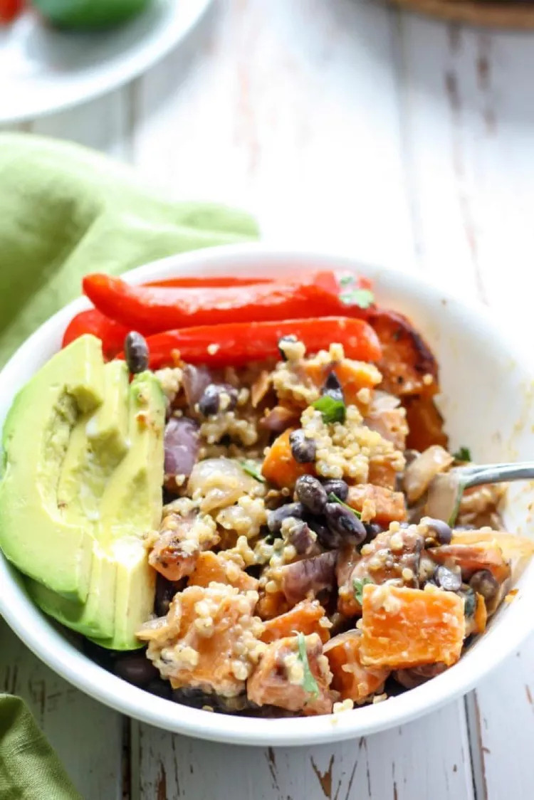

Home
Southwest Quinoa Power Bowl with Honey-Lime Dressing

Description
A filling plant-based meal using simple whole foods and some adobo
seasoning makes for one delicious Southwest quinoa power bowl. Top with a
healthy, homemade honey-lime dressing and this bowl will be on repeat!
Packed with protein and fiber, plus it's gluten free and dairy free.
Ingredients
- 3 cups quinoa
- 1 ½ cups water
- ¾ teaspoon adobo seasoning, or more to taste
- 1 tablespoon olive oil, or to taste
- 3 medium sweet potatoes, peeled and chopped
- ¾ cup onion, chopped
- salt and ground black pepper to taste
- 1 ½ cups canned black beans, rinsed
- 3 medium red bell peppers, sliced
- 3 medium avocados, sliced
- 1 tablespoon chopped fresh cilantro, or to taste
Honey-Lime Dressing
- 9 tablespoons lime juice
- 6 tablespoons canned coconut milk
- 3 tablespoons water
- 3 tablespoons raw honey
- 1 tablespoon olive oil
- ½ teaspoon salt, or more to taste
Steps
-
Rinse quinoa in a fine mesh strainer and place in a small pot. Add 1 1/2
cups water and bring to a boil. Add 3/4 teaspoon adobo seasoning, lower
heat, and simmer until quinoa is tender and water is almost gone, about
15 minutes. Remove from the heat.
-
Meanwhile, make dressing: whisk lime juice, coconut milk, water, honey,
olive oil, and salt together in a bowl. Set aside.
-
Distribute quinoa, sweet potato-onion mixture, black beans, bell
peppers, and avocados in 6 bowls. Dress with honey-lime dressing and
garnish with cilantro.